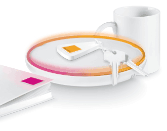

Software Everywhere: La Internet de las Cosas en el Chile Post-Bicentenario
Por Luis Ramírez (*)
¿Cuál es el futuro de Internet? Soy un convencido de que la web semántica es sólo una forma de profundizar (¿mejorar?) la manera de relacionarnos con los datos existentes. ¿The Cloud? Más de lo mismo. En mi opinión, lo que realmente constituirá una innovación significativa es sacar la Internet de los aparatos tradicionales e incrustarla en aparatos no convencionales. Durante esta década veremos el surgimiento de esta segunda Internet, donde cualquier cosa se transforma en un “Smart Object” con capacidad de comunicarse en cualquier momento y en cualquier lugar con la red. Creo que en eso más que nada radica el futuro de Internet.
2010-2020 será la década de la “Internet de las Cosas”

Lo que tendría que ocurrir de aquí a 2020 es la masificación de chips de bajo costo incrustables en casi cualquier cosa ( incluyendo objetos domésticos como refrigeradores, o vehículos de transporte) y aplicaciones que permitan no sólo bi-direccionalidad en la transmisión de datos, sino que además la capacidad de esos objetos para conectarse con Internet.
Lo anterior representa un gran salto que abre posibilidades insospechadas. Mi ejemplo favorito es el tag que usamos en algunas carreteras en Chile. Este dispositivo hoy es muy básico. En un futuro cercano, podría activar diversas funciones ya sea en nuestro hogar, a medida que nos acercamos a casa o con empresas proveedoras de servicios.
¿Cómo avanzamos? La implementación de la nueva versión de IP (versión 6 o IPv6) ya no es un asunto de opción sino de necesidad. La situación actual de término inminente de las direcciones IP, aún en un escenario de administración estricta, supone que vivimos los últimos tres o cuatro años previos al “recambio forzado”.
Empresas líderes a nivel mundial ya están trabajando en esa transición por medio de la “IPSO Alliance” que convoca a 27 de los principales actores de la industria, incluyendo Intel, Sun, Cisco y Google. También se ve con claridad el interés de la Comunidad Europea, mientras que naciones pioneras como Corea del Sur y Japón que ya llevan años experimentando. En síntesis, todo indica que la Internet de las Cosas a nivel mundial ya está en marcha.
¿Estamos preparados en Chile? Respuesta corta: No por ahora, pero hemos comenzado a avanzar. Hay factores favorables y otros que complican un poco el panorama.
Factores favorables en Chile
Masificación de redes: No sólo tenemos un despliegue razonable de redes fijas sino que las redes móviles han crecido a tasas muy por sobre lo esperado. Además, un operador (ENTEL) se ha hecho cargo del proyecto de conectividad rural que supone que a 2012-13 tendremos un cobertura radicalmente mayor en regiones y zonas aisladas. En una frase: Chile al 2014 tendrá la mejor infraestructura de redes de México a la Patagonia.
Proyecto IPv6: La iniciativa, liderada por NIC Labs con resplado de la Subsecretaría de Telecomunicaciones (SUBTEL) y varias empresas, se ha propuesto diseñar un “Plan Estratégico” para la transición chilena al IPv6. La meta es tenerlo en 30 meses, por lo que es probable que para mediados de 2012 ya tengamos claridad absoluta de cómo iniciar el despliegue.
Interés de líderes de la industria: Durante los primeros años de la primera Internet, las empresas fueron más bien cautas, pero el hecho de que ahora estén participando activamente en el proyecto IPv6 ( por ahora Claro, Entel, Movistar, Telmex, VTR y Cisco), parece una buena señal. Además, estos y otros actores han alcanzado tamaños que les permiten experimentar con nuevas tecnologías (por. ejemplo LTE) y apostar un poco más por la innovación.
Factores limitantes
Gobierno y Congreso Nacional: Aquí me parece que tenemos un gran cuello de botella. Que alguien me corrija, pero no he escuchado a ningún parlamentario o ministro referirse al tema. Hasta donde entiendo, jamás el Presidente ha hecho una referencia tampoco. Seguridad y Privacidad: Tal como se ha planteado en las discusiones internacionales, hay un nivel importante de preocupación por la privacidad de los datos que circularán en este nuevo ecosistema. Es probable que los mismos resquemores de los usuarios limiten los usos posibles en los primeros años, quizás de manera similar a cómo ocurrió con el despegue del comercio electrónico.
Conclusión
Las implicancias de este artículo no tienen sentido si se le miran en perspectiva de corto plazo (2010). Hay que plantear la discusión subyacente en perspectiva de la década entera. Los cambios importantes vendrán en no menos de cinco años. Hay que hacer lo posible para que no sea más que eso.
Al final, me quedo con esta cita, optimista por cierto: “Chile puede tomar un lugar avanzado a nivel mundial tanto en el mercado de desarrollo de software, como en el desarrollo de productos innovadores que utilicen Internet como medio de comunicación de dispositivos, además de poder liderar la implementación de IPv6 en la región.” (Proyecto IPv6, NICLabs, Chile)
La pregunta no es si la “Internet de las Cosas” ocurrirá o no, sino cuánto tiempo nos demoramos en la transición. Si somos más efectivos que en el despliegue de la primera Internet, en menos de una década Chile podría transformarse en líder regional de esta nueva Internet. Para que ello ocurra, además de chips y regulación, hay un enorme desafío por delante para los desarrolladores de software y todos los que participan en la industria informática, que se resume en cómo proveer soluciones de pertinencia local, con capacidad de ajustarse a aparatos de cualquier tipo.
Ubicuidad de Internet, es también ubicuidad de software. Por ahí parece que vendrá el futuro.
Lecturas Recomendadas
-
The second Annual Internet of Things conference report: “A Roadmap for Europe” (June 1st & 2nd 2010, Brussels)
-
Kranz M, Holleis, P y Schmidt, A (2010) “Embedded Interaction: Interacting with the Internet of Things” IEEE Internet Computing, March-April p.46-53
-
Kloch C, Kristensen J E, Bilstrup, B (2010) “Future Scenarios: What are the Future Services and Applications?“Wireless Personal Communication Volume 53, Number 3, 315-327
(*) Luis Ramírez lleva varios años trabajando -desde la academia y desde el activismo- temas relacionados con el acceso a Internet y las implicancias sociales de las TICs. Posee postgrados en la Universidad de Chile y la London School of Economics.
(**) Luis aceptó gentilmente colaborar con motivo de las celebraciones por los cinco años de publicación de La Naturaleza Del Software. Gracias Luis por tu interesante aporte.